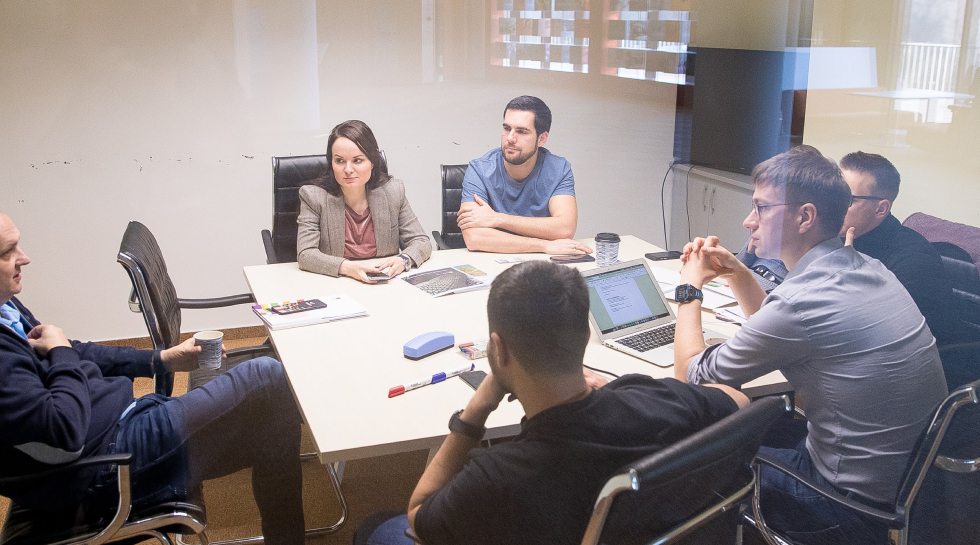

One of the main questions of all project managers is: how to best finish a software
project on time
and on budget?
Turns out, the answer is quite straightforward. Proper research and planning before tackling the
software project help greatly.
In this article, we will look at a crucial part of every software project that can help your project
succeed to launch in the required deadline: the discovery phase.
What is a discovery phase?
A discovery phase is a consultancy product that helps the client do the right thing with his
business. In more detail, it is a phase that generates a comprehensive plan for the rest of the
development process. The plan includes things like functional and technical requirements, scope
estimates, and a release plan.
But it doesn’t mean that you should plan your whole project in one go
Our approach to the discovery phase is to focus only on the most important functionality and
provide the customer with the necessary extent of detail to begin the development.
Low-priority functionality is usually subject to big changes. That’s why trying to describe it
from the start results in a waste of time. Additionally, low-priority functionality can be
discussed and detailed during the development stage.
This approach is aimed at maximizing product value, saving time and reducing the cost of both
the discovery and development phases.
